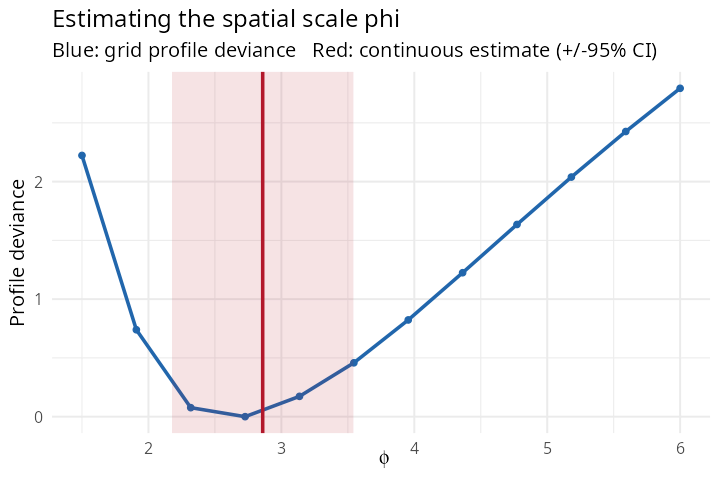

4. Estimating the spatial scale: grid vs continuous
Source:vignettes/scale-grid-vs-continuous.Rmd
scale-grid-vs-continuous.RmdThe spatial scale
controls how fast spatial correlation decays with distance — it sets the
“reach” of a hotspot. This tutorial explains how SDALGCP2
estimates it and is self-contained.
Where lives: a double integral
The region-level random effect is the average over area of a continuous process with . The covariance between two regions is therefore a double integral over the pair of areas: approximated by a weighted sum over the candidate points inside each region. appears inside this integral, so the whole correlation matrix depends on it. There are two ways to estimate it.
Set up an example
library(SDALGCP2)
library(sf)
set.seed(11)
regions <- st_sf(geometry = st_make_grid(
st_as_sfc(st_bbox(c(xmin = 0, ymin = 0, xmax = 20, ymax = 20))), n = c(9, 9)))
N <- nrow(regions)
pts <- sda_points(regions, delta = 1.1, method = 3)
S <- as.numeric(t(chol(0.5 * precompute_corr(pts, 3)$R[, , 1])) %*% rnorm(N)) # true phi = 3
regions$x1 <- rnorm(N)
regions$pop <- round(runif(N, 800, 4000))
regions$cases <- rpois(N, regions$pop * exp(-6 + 0.5 * regions$x1 + S))Grid (profile)
The classic approach (and that of the original SDALGCP):
evaluate the model on a grid of
values and take the profile maximum.
fit_grid <- sdalgcp(cases ~ x1 + offset(log(pop)), data = regions,
control = sdalgcp_control(scale = "grid",
phi = seq(1.5, 6, length.out = 12)))Continuous (direct) — the default
The aggregated correlation
is differentiable in
:
the derivative is obtained by differentiating the kernel inside the
integral,
.
SDALGCP2 therefore optimises
directly, jointly with
and
,
with no grid. This removes the grid-discretisation error and — because
is now a fitted parameter — yields a proper standard
error from the joint Hessian (full derivation: math/continuous-phi-derivation.pdf).
They agree — and continuous gives a standard error
# (timings will vary)#> GRID: phi = 2.73 beta_x1 = 0.437 [6.0s]
#> CONTINUOUS: phi = 2.86 (SE 0.35) beta_x1 = 0.449 [6.2s]
The blue curve is the grid profile deviance; its minimum (the grid ) falls between grid nodes. The red line is the continuous estimate with its 95% confidence band — essentially the same value, but obtained without choosing a grid and with an honest standard error that the grid cannot provide.
Which to use?
| grid | continuous (default) | |
|---|---|---|
| restricted to grid nodes | exact, no discretisation error | |
| SE for | not available | from the joint Hessian |
| profile shape | fully visible (good for multimodality) | not traced |
| Matérn smoothness | any | 0.5, 1.5, 2.5 |
Use continuous (the default) for a clean estimate
with a standard error and no grid to choose. Use grid
when you want to inspect the whole profile — e.g. to check for a flat or
multimodal likelihood, with plot(fit_grid). Both are
selected by sdalgcp_control(scale = ...). ```